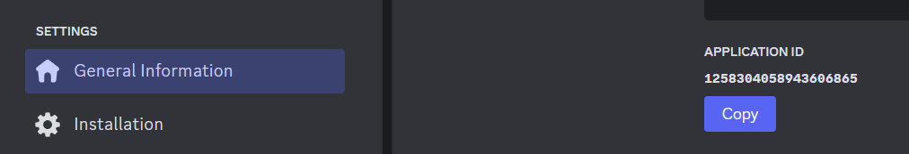

搭建 Discord 机器人
创建机器人
- 打开 https://discord.com/developers/applications/，点「New application」新建一个应用（机器人）。
- 把机器人邀请进服务器：把下面 URL 里的
REPLACE-HERE-THE-ID换成机器人的 ID，然后在浏览器打开完成授权：
https://discordapp.com/oauth2/authorize?client_id=REPLACE-HERE-THE-ID&scope=bot
机器人 ID 在「General Information」里能看到。

- 获取 Token：进入「Bot」页面，点「Reset Token」，把生成的 Token 复制下来并妥善保存（只显示一次）。

- 把 Token 填进
config.yml的discord-bot → token，并把enabled设为true。